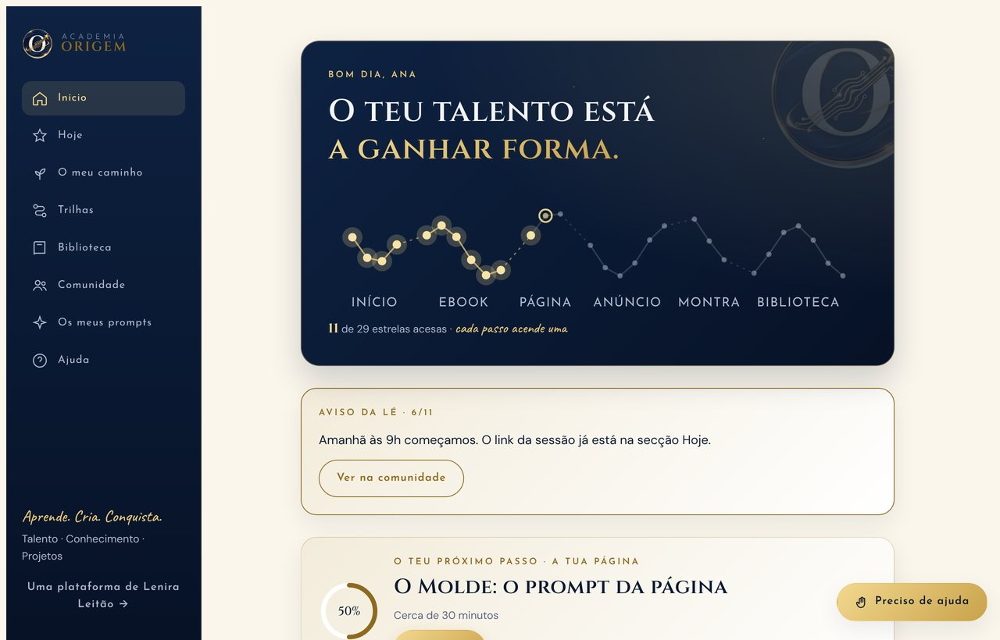
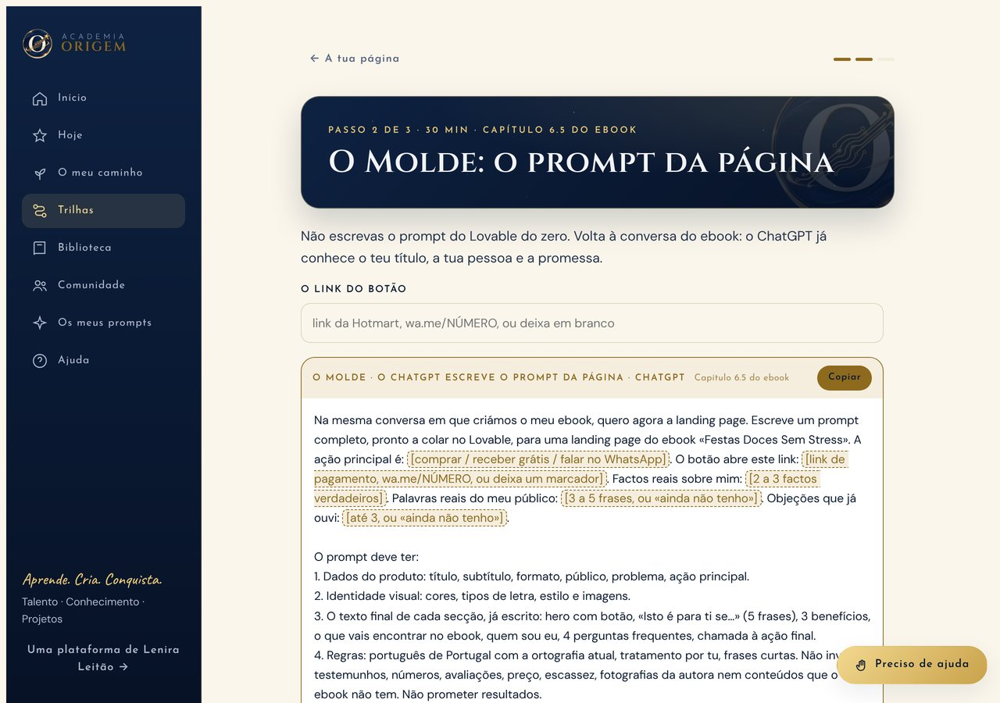
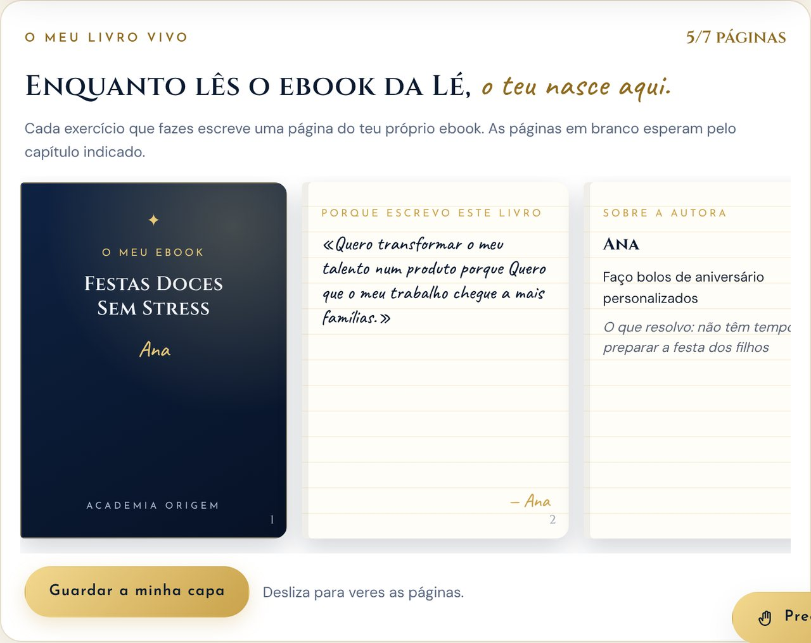
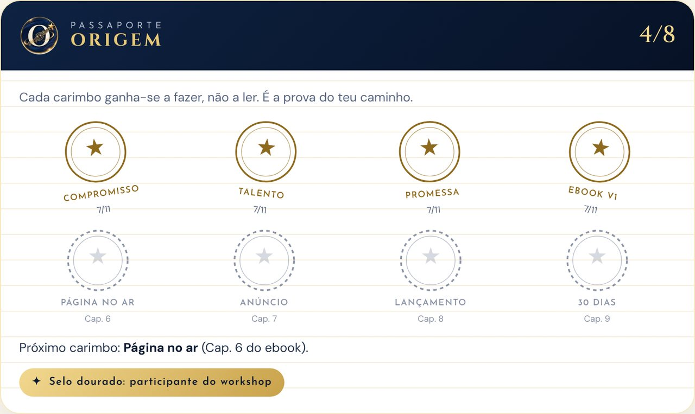
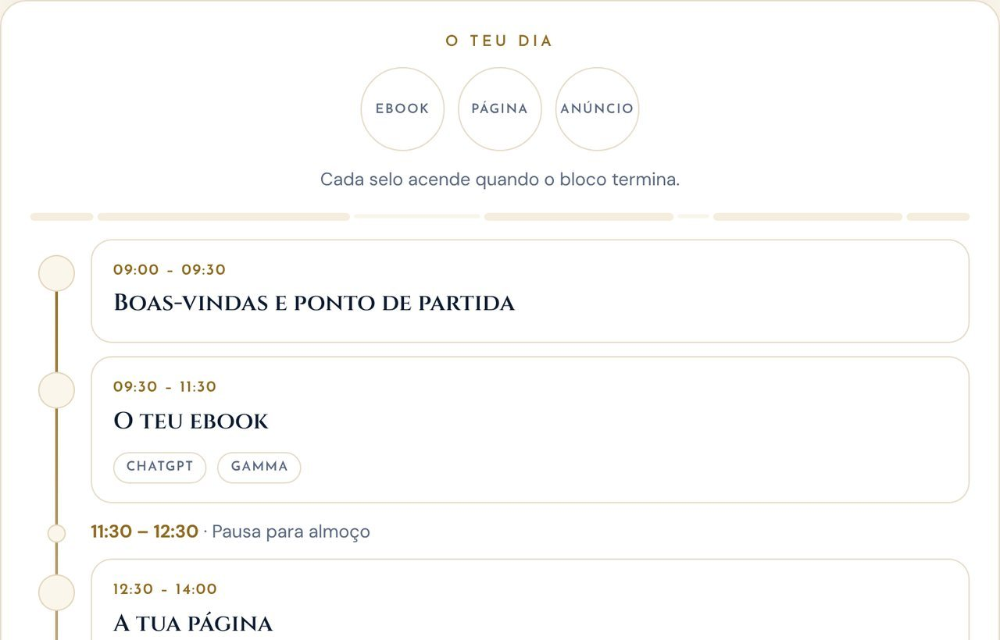
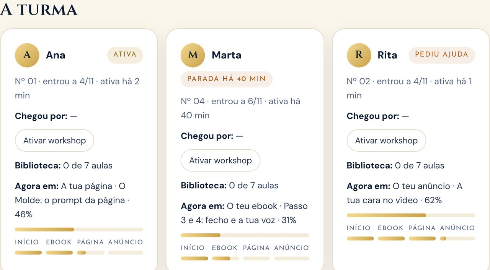

O problema
Um curso não pode acabar quando acaba a aula
Quem compra um ebook ou faz um workshop fica muitas vezes sozinha no dia seguinte: o PDF fica numa pasta, os prompts têm de ser copiados e adaptados à mão, e a formadora não sabe quem parou nem onde.
Num workshop ao vivo de um dia inteiro, com ChatGPT, Gamma, Lovable e Google Flow abertos ao mesmo tempo, quem fica presa perde o ritmo e, muitas vezes, não quer interromper a turma.
A Academia ORIGEM junta tudo num só lugar: o método, os exercícios, as ferramentas, a turma e a formadora. Cada resposta da aluna é reaproveitada no passo seguinte, para que o projeto avance mesmo quando a motivação baixa.
O que faz
Três pessoas, três experiências
A leitora do ebook, a aluna do workshop e a formadora entram na mesma app, mas cada uma vê o que lhe pertence.
Para a aluna
Trilhas com o próximo passo
22 aulas em 5 trilhas (Começa aqui, Ebook, Página, Anúncio e Montra), com cerca de 12 horas de trabalho guiado. O início mostra sempre o próximo passo e quanto tempo demora.
Prompts que se preenchem sozinhos
Os 16 prompts do método já vêm com o título, o público e a promessa que a aluna escreveu antes. O que falta preencher aparece a dourado.
O livro vivo
Cada exercício escreve uma página do ebook da própria aluna: capa, porque escrevo, sobre a autora, índice. A capa pode ser guardada como imagem.
Passaporte e cartão de talento
8 carimbos ganhos a fazer, não a ler: compromisso, talento, promessa, ebook, página no ar, anúncio, lançamento e 30 dias.
«Cada carimbo ganha-se a fazer, não a ler.»
Plano de 30 dias
Dois ritmos à escolha: um passo por dia durante 30 dias, ou um sábado intensivo em 6 blocos.
Quando ficas presa
Os 13 problemas mais comuns com a solução de cada um, dicas para poupar créditos, glossário com 14 termos e notas na margem de cada capítulo.
No dia do workshop
Secção «Hoje»
O horário do dia, o link da sessão e os selos Ebook, Página e Anúncio, que acendem quando cada bloco termina.
Botão «Preciso de ajuda»
A aluna escreve onde está presa. O pedido chega logo ao painel da formadora, com o passo em que está.
Comunidade e montra
Dúvidas, partilhas, vitórias e o «teste dos 5 segundos» ao título do ebook. Na montra, cada aluna mostra o que criou.
Para a formadora
Painel da turma em tempo real
Quem está ativa, quem está parada há mais de 15 minutos, quem pediu ajuda e em que aula está cada uma.
Conduzir o dia
A formadora inicia cada bloco e as alunas veem o bloco atual com temporizador.
Ver como a aluna vê
Botões para ver a app como leitora do ebook ou como aluna do workshop, antes de publicar alterações.
A escada de produtos
Ebook, workshop, programa de 4 semanas e mentoria. Cada aluna pode mostrar interesse no degrau seguinte, sem pagamentos dentro da app.
Acesso e vendas
Ligação à Hotmart
Uma compra aprovada dá acesso ao email da compra. Um reembolso ou chargeback retira-o. Sem trabalho manual.
Conteúdo protegido
As aulas e os prompts não estão no código da app. A base de dados só entrega o conteúdo do nível de cada pessoa.
Ecrãs
Como se vê






Capturas de ecrã com dados de exemplo (a aluna «Ana» e a turma são fictícias), para não expor alunas reais.
Por dentro
Da compra ao projeto feito
O que acontece, passo a passo, desde que alguém compra até ter o ebook, a página e o anúncio prontos.
- Hotmart · compra
Dar acesso sozinho
A Hotmart avisa a app. Uma função no servidor confirma o segredo, regista o aviso e dá o nível certo (ebook ou workshop) ao email da compra.
- Telemóvel ou computador · entrada
Entrar com o email
Na primeira vez, a aluna cria a palavra-passe com regras claras. Se o email não tiver compra, a app explica o que fazer em vez de mostrar um erro.
- Base de dados · conteúdo
Entregar só o que foi comprado
A leitora recebe as aulas do ebook. A aluna do workshop recebe também a Biblioteca, a Turma e as trilhas da Página, do Anúncio e da Montra.
- App · aulas
Aprender a fazer
Cada resposta é guardada e reaproveitada nos prompts seguintes, no livro vivo e no cartão de talento. Os carimbos aparecem quando o trabalho fica feito.
- Tempo real · painel
Acompanhar a turma
O progresso de cada aluna chega ao painel da formadora. Os pedidos de ajuda aparecem com um número no menu.
- Hotmart · reembolso
Retirar o acesso
Um reembolso, chargeback ou cancelamento retira o acesso automaticamente.
Como foi feita
As ferramentas, explicadas sem jargão
Cada linha diz o que a ferramenta é e para que serve nesta app.
Construir e publicar
Onde a app está publicada, em academia-origem-preparacao.lovable.app.
Guarda o código e o histórico de cada alteração, com a explicação do porquê.
Escreveu e corrigiu o código a partir dos pedidos e das decisões da Lenira.
A app por dentro
Guarda o progresso, a comunidade e os acessos. As regras de quem vê o quê estão na própria base de dados, não só no ecrã.
Atualiza o painel da formadora e a comunidade sem recarregar a página.
Recebe os avisos de compra e de reembolso e dá ou retira o acesso.
Desenha a capa do ebook e o cartão de talento para a aluna guardar e partilhar.
Decisões
Problemas reais e como foram resolvidos
Decisões tomadas para que a app seja segura, justa para quem compra e fácil para quem ensina.
O conteúdo pago estava no código da app, e qualquer pessoa com conhecimentos técnicos o podia ler.
As aulas e os prompts passaram para a base de dados. Quem não comprou não recebe nada, e a leitora não recebe o conteúdo do workshop.
Dar acesso à mão, compra a compra, não funciona num lançamento.
A ligação à Hotmart dá e retira acessos sozinha, e o painel permite corrigir um caso à mão.
No workshop, quem fica presa não quer interromper a turma.
O botão «Preciso de ajuda» e o aviso «Parada há X min» mostram à formadora quem precisa dela, sem ninguém ter de pedir em voz alta.
Um ebook lido não é um ebook escrito.
Cada exercício preenche os prompts seguintes e uma página do livro vivo da aluna. Os carimbos só se ganham a fazer.
Em números
A app em números
Com franqueza
Limites atuais
- O Supabase gratuito envia poucos emails por hora. Para uma turma inteira entrar no mesmo dia, é preciso ligar um servidor de email próprio.
- Ainda tem poucos testes automáticos.
- O programa de 4 semanas e a mentoria aparecem como «Em breve».
A seguir
Próximos passos
- Juntar testes automáticos às partes mais sensíveis: acessos, Hotmart e painel.
- Abrir o programa «Do Talento ao Produto» e a mentoria dentro da mesma escada.
- Adaptar a plataforma para outras formadoras, escolas e empresas que vendem cursos e workshops.
O meu papel
Lenira Leitão
O método ORIGEM, as aulas, os prompts, a escada de produtos e o desenho de cada ecrã são meus. A app foi construída com ferramentas de IA, a partir dos meus pedidos e das minhas decisões.
Pensei em cada pessoa que entra: a leitora que só comprou o ebook, a aluna que está presa a meio do workshop e a formadora que tem de acompanhar uma turma inteira ao mesmo tempo.